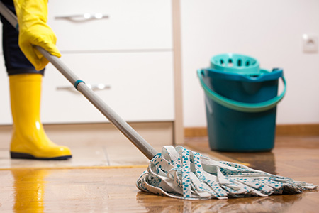
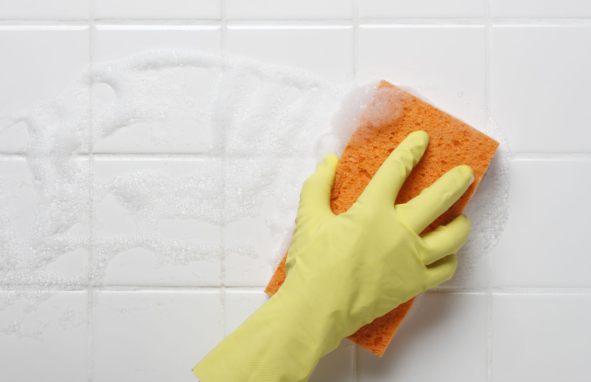
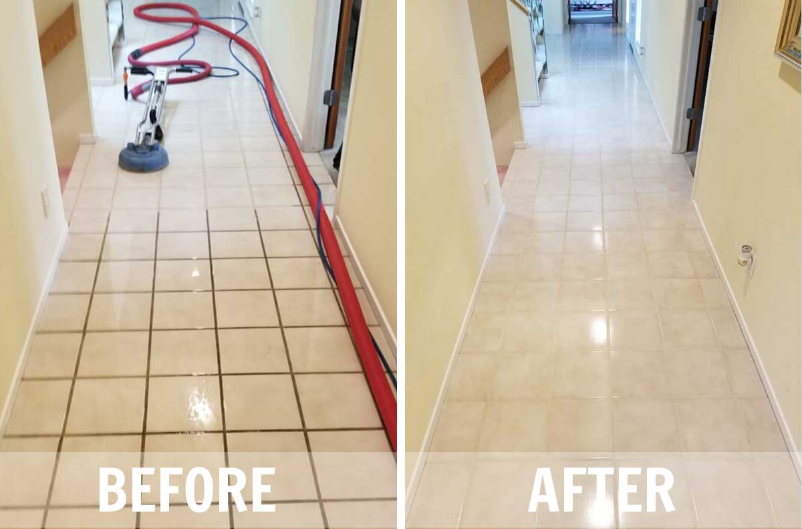

Kako pravilno održavati keramičke pločice i podove
Keramičke pločice su izdržljiv i estetski privlačan materijal koji zahtijeva pravilno održavanje kako bi zadržale svoj besprijekoran izgled i dugovječnost. U ovom članku saznajte kako ih pravilno održavati, čistiti i štititi od oštećenja.
1. Redovno čišćenje
Redovno čišćenje keramičkih pločica ključ je za očuvanje njihovog izgleda:
- Voda i blagi deterdžent: Koristite vodu s blagim deterdžentom ili sredstvima za čišćenje koja nisu agresivna, jer bi jaka kemijska sredstva mogla oštetiti pločice.
- Čista krpa: Za čišćenje koristite meke krpe ili mopove kako biste izbjegli grebanje površine.
- Sušenje: Nakon čišćenja, obavezno obrišite pločice suhom krpom kako biste izbjegli mrlje od vode.
2. Zaštita od mrlja
Keramičke pločice su otporne na mnoge vrste mrlja, ali dugotrajna izloženost može dovesti do promjena boje:
- Odmah uklonite mrlje: Ako prolijete nešto, odmah obrišite da biste izbjegli trajne mrlje.
- Koristite zaštitu za pločice: Postavite pločice s odgovarajućim premazima koji štite od mrlja, naročito u kuhinjama i kupaonicama.


3. Izbjegavanje oštećenja
Keramičke pločice mogu biti oštećene udarcima ili prekomjernim stresom:
- Koristite zaštitu: Stavite podmetače ili zaštitu ispod teških predmeta, poput stolica ili stolova, kako biste spriječili oštećenje.
- Izbjegavajte oštre predmete: Nemojte vući teške predmete po pločicama jer to može izazvati oštećenja ili ogrebotine.
4. Redovno provjeravanje fuga
Fuge između pločica također zahtijevaju pažnju:
- Provjera fuga: Redovno provjeravajte fugne da biste spriječili nakupljanje prljavštine ili plijesni.
- Obnavljanje fuga: Ako se fuga počne trošiti ili oštećivati, razmislite o njezinoj obnovi ili zamjeni.

5. Završni savjeti za dugovječnost pločica
- Zaštita od kemikalija: Izbjegavajte uporabu agresivnih kemikalija koje mogu oštetiti pločice ili njihovu površinsku obranu.
- Redovno čišćenje: Pločice održavajte čistima, posebno na mjestima gdje se nalaze visoke temperature ili vlaga.
Pravilnim održavanjem, keramičke pločice mogu trajati dugi niz godina, pružajući vam lijep i funkcionalan prostor. Održavanje pločica jednostavno je, ali zahtijeva redovito čišćenje i pažnju prema detaljima.